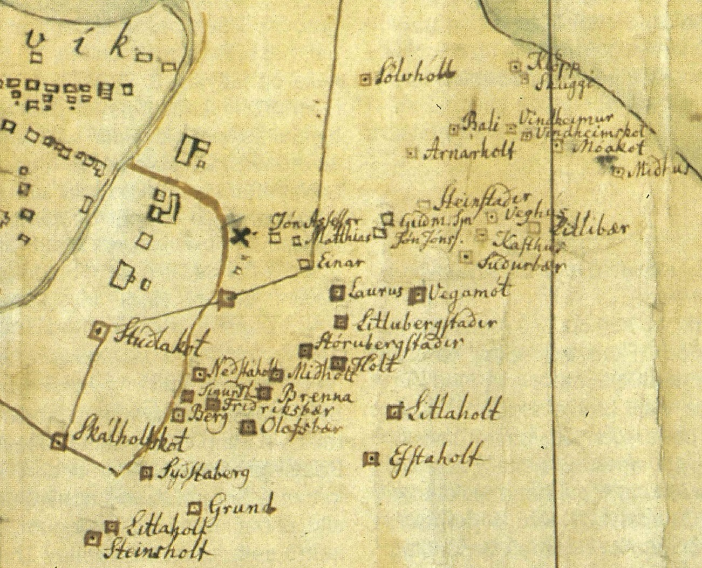
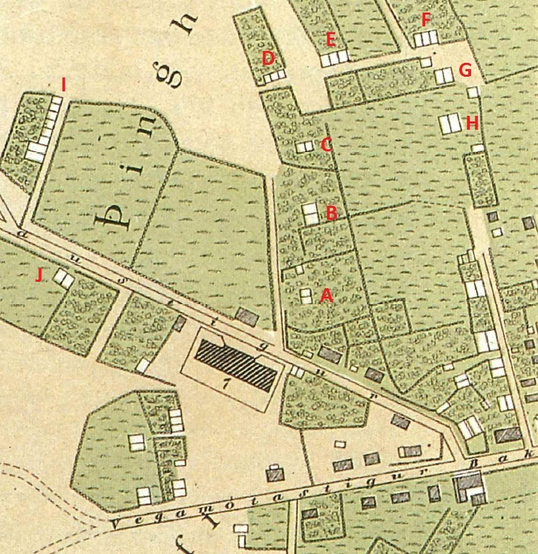
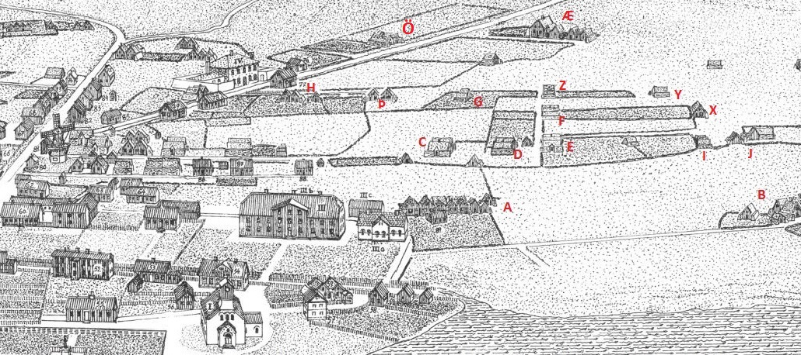
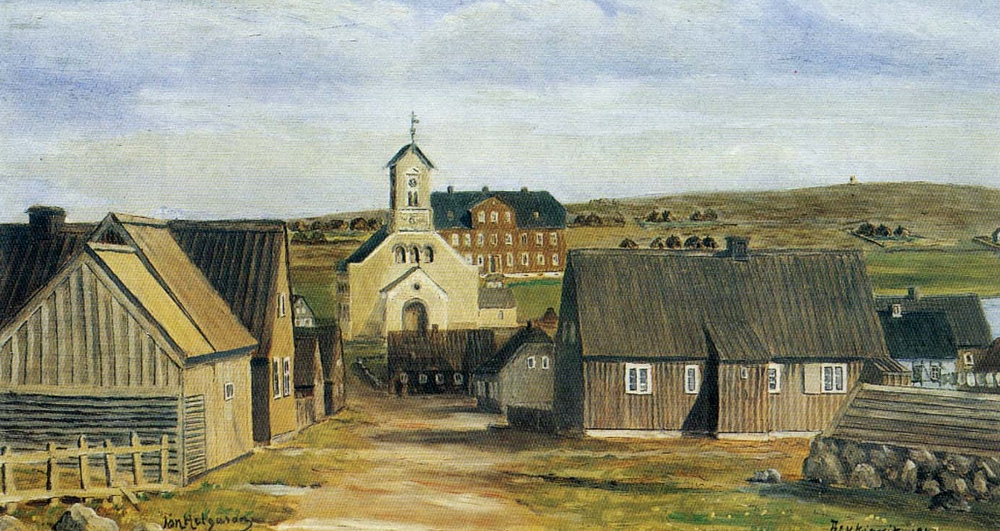

um 1850
Kort Björns Gunnlaugssonar af Reykjavík austan lækjar um 1850. Torfbæir eru merktir sem kassi með punkti í miðju. Neðarlega vinstra megin má sjá hjáleigur gamla Reykjavíkurbæjarins, Skálholtskot og Stöðlakot. Á miðri mynd eru bæir í Þingholtunum, ofar þeir sem voru við Þingholtsstræti og Ingólfsstræti næst Bankastræti, en neðar þeir sem töldust tilheyra suður Þingholtum. Þar fyrir ofan má sjá bæi í Skuggahverfi.
Ákveðnir fyrirvarar eru gerðir við áreiðanleika og nákvæmni þessa korts. Bæi vantar sem heimildir eru fyrir, t.d. bæi við Ingólfsstræti. Arnarhóll er merktur inn á teikninguna þótt bærinn hafi verið rifinn árið 1828 og fleira mætti telja til.

Kort Björns Gunnlaugssonarum 1850

Kort Sveins Sveinssonar1876
1876
Kort Sveins Sveinssonar frá 1876 af suður Þingholtum. Bæir sem tilheyra þessu svæði hafa verið merktir inn.
- A: Bergstaðir (Bergstaðastræti 6)
- B: Miðholt (Hallveigarstígur 10)
- C: Brenna (Bergstaðastræti 12)
- D: Litla-Grund (Bergstaðastræti 16)
- E: Efstibær (Spítalastígur 4)
- F: Berg (Grundarstígur 2)
- G: Sigurðarbær (Ingólfsstræti 23)
- H: Pálsbær (Ingólfsstræti 21)
- I: Efraholt (Týsgata 1)
- J: Litlaholt (Skólavörðustígur 17-19)
Eins og títt var um torfbæi í Reykjavík báru margir þeirra önnur nöfn á einhverjum tíma. Bergstaðir áður Stóru-Bergstaðir, en Litlu-Bergstaðir stóðu þar sem nú er Skólavörðustígur 4. Miðholt nefndist áður Guðnabær eftir þeim sem upphaflega reisti bæinn. Efstibær var áður nefndur Hinriksbær eftir eigandanum. Berg var einnig nefnt Zakaríasarbær. Sigurðarbær var nefnt Norður-Berg og Pálsbær var upphaflega nefndur Holt. Efst í Þingholtunum voru Efraholt sem síðar var jafnan nefnt Holt og Litlaholt sem einnig var nefnt Þorláksbær eftir Þorláki Péturssyni sem reisti bæinn. Allir þessir bæir risu um eða fyrir 1850 nema Litla-Grund sem reistur var árið 1856.
um 1880
Teikning Aage Olsen Aanum, byggt á eldri kortum, sýnir austurhluta Reykjavíkur um 1880. Torfbæir sem stóðu þar sem nú er suðurhluti Þingholta eru merktir með bókstöfum. Stöðlakot (A), Skálholtskot (B), Pálsbær (C), Sigurðarbær (D), Berg (E), Hinriksbær (F), Brenna (G), Bergstaðir (H), Halldórsbær (I), Suður-Berg (J), Grund (X), Miðgrund (Y), Litla-Grund (Z), Miðholt (Þ), Efraholt (Æ) og Litlaholt (Ö)

Teikning eftir Aage Olsen Aanumum 1880

Málverk eftir Jón Helgasonum 1850
um 1850
Málverk Jóns Helgasonar biskups af dómkirkjunni og nágrenni um 1850. Horft er eftir vegslóða sem er upphafið að Kirkjustræti þótt gatan liggi í dag örlítið norðar. Í bakgrunni má sjá fjölmarga torfbæi í Þingholtunum. Með samanburði við myndir hér ofar má með sæmilegri nákvæmni nafngreina bæina. Hafa ber þó í huga að Jón málar myndina um hálfri öld síðar en byggir á eldri kortum og heimildum.